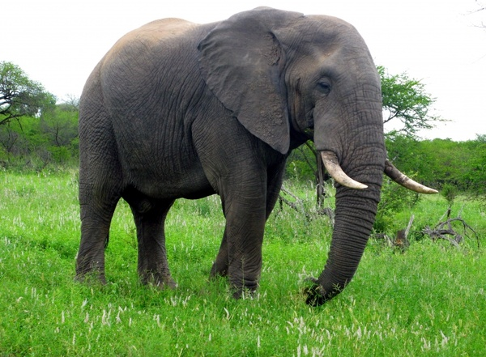
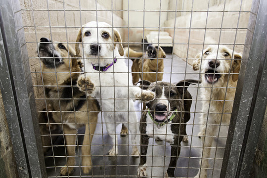
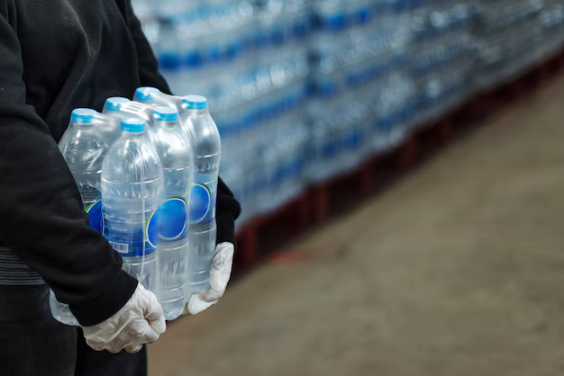

Land on Life
| Species | Status |
|---|---|
| African Elephant | Vulnerable |
| Snow Leopard | Endangered |
| Giant Panda | Vulnerable |
| Orangutan | Critically Endangered |
| Blue Whale | Endangered |
| Amur Leopard | Critically Endangered |
| Black Rhino | Critically Endangered |
| Hawksbill Turtle | Critically Endangered |
| Mountain Gorilla | Endangered |
| Saola | Critically Endangered |
Animal Rescue
| Name | Type | Condition | Shelter | Status |
|---|---|---|---|---|
| Buddy | Dog | Injured leg | Hope Shelter | Recovering |
| Whiskers | Cat | Abandoned | Paws Haven | Adopted |
| Rocky | Dog | Malnourished | City Shelter | Recovering |
| Luna | Cat | Sick | Paws Haven | Under Treatment |
| Max | Dog | Injured | Hope Shelter | Adopted |
| Bella | Cat | Abandoned | City Shelter | Recovering |
| Charlie | Dog | Old age | Hope Shelter | Adopted |
| Daisy | Cat | Injured | Paws Haven | Under Treatment |
| Cooper | Dog | Lost | City Shelter | Recovering |
| Oliver | Cat | Malnourished | Paws Haven | Adopted |
Human Welfare

| Name | Age | Aid | Location | Status |
|---|---|---|---|---|
| Yuvraj S | 12 | Food | New Delhi | Relieved |
| Harshni Kumar | 22 | Medicine | Chennai | Under Treatment |
| Salim Khan | 40 | Clothing | Mumbai | Relieved |
| Sarah John | 28 | Food | Kerala | Relieved |
| Aayushi M | 50 | Medicine | Lucknow | Under Treatment |
| Mahendar Singh | 18 | Clothing | Punjab | Relieved |
| Karthik N | 35 | Food | Karnataka | Relieved |
| Anushka Shetty | 25 | Medicine | Maharashtra | Under Treatment |
| Jessica C | 45 | Clothing | Andhra Pradesh | Relieved |
| Saravanan K | 30 | Food | Tamil Nadu | Relieved |
Food and Water Support
| Location | Food | Water | Sustainability |
|---|---|---|---|
| Village A | Rice | Bottled | Water Wells |
| City B | Bread | Canned | N/A |
| Town C | Lentils | Bottled | N/A |
| Village D | Rice | Canned | Water Wells |
| City E | Bread | Bottled | N/A |
| Town F | Lentils | Canned | N/A |
| Village G | Rice | Bottled | Water Wells |
| City H | Bread | Canned | N/A |
| Town I | Lentils | Bottled | N/A |
| Village J | Rice | Canned | Water Wells |
Collaborations

| Institution | Type | Support | Volunteers |
|---|---|---|---|
| University X | Educational | Equipment | 20 |
| Organization Y | Conservation | Training | 15 |
| Company Z | Financial | Funds | 10 |
| School A | Educational | Equipment | 25 |
| Group B | Conservation | Training | 12 |
| Corp C | Financial | Funds | 8 |
| College D | Educational | Equipment | 18 |
| Association E | Conservation | Training | 14 |
| Firm F | Financial | Funds | 9 |
| Institute G | Educational | Equipment | 22 |
Sponsorship
| Category | Item | Sponsor | Beneficiaries |
|---|---|---|---|
| Orphan | Education | John Smith | 1 |
| Animal | Shelter | Jane Doe | 5 |
| Community | Food | Organization X | 100 |
| Orphan | Education | David Lee | 2 |
| Animal | Shelter | Sarah Jones | 3 |
| Community | Food | Company Y | 150 |
| Orphan | Education | Michael Brown | 1 |
| Animal | Shelter | Emily Davis | 4 |
| Community | Food | Organization Z | 200 |
| Orphan | Education | Robert Wilson | 3 |
Donations

| Donor | Type | Amount | Cause | ||||||||||||||||||||||||||||||||||||||||||
|---|---|---|---|---|---|---|---|---|---|---|---|---|---|---|---|---|---|---|---|---|---|---|---|---|---|---|---|---|---|---|---|---|---|---|---|---|---|---|---|---|---|---|---|---|---|
| John Smith | Individual | 1000 | Animal Rescue | ||||||||||||||||||||||||||||||||||||||||||
| Jane Doe | Corporate | 500 | Human Welfare | ||||||||||||||||||||||||||||||||||||||||||
| David Lee | Individual | 500 | Food & Water | ||||||||||||||||||||||||||||||||||||||||||
| Sarah Jones | Individual | 7500 | Animal Rescue | ||||||||||||||||||||||||||||||||||||||||||
| Michael Brown | Corporate | 2500 | Human Welfare | ||||||||||||||||||||||||||||||||||||||||||
| Emily Davis | Individual | 2500 | Food & Water | ||||||||||||||||||||||||||||||||||||||||||
| Robert Wilson | Individual
References
|